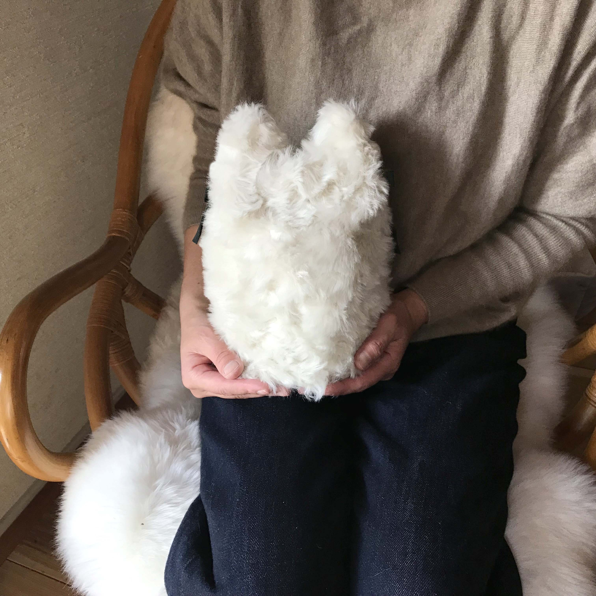
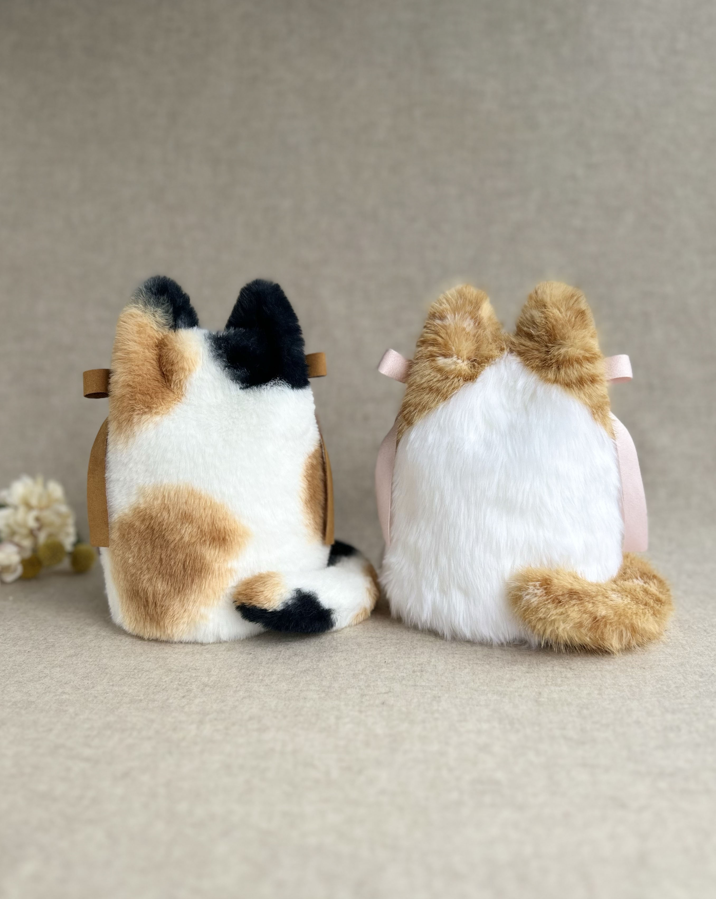
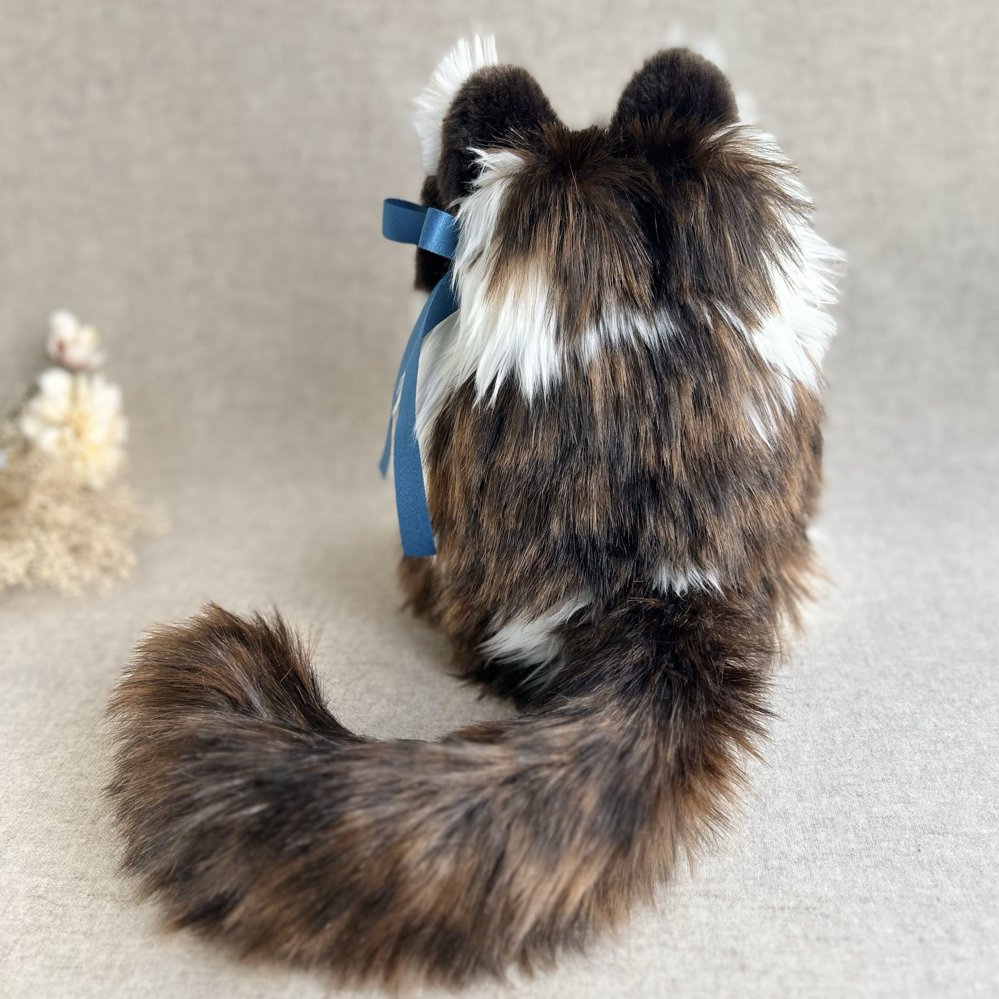
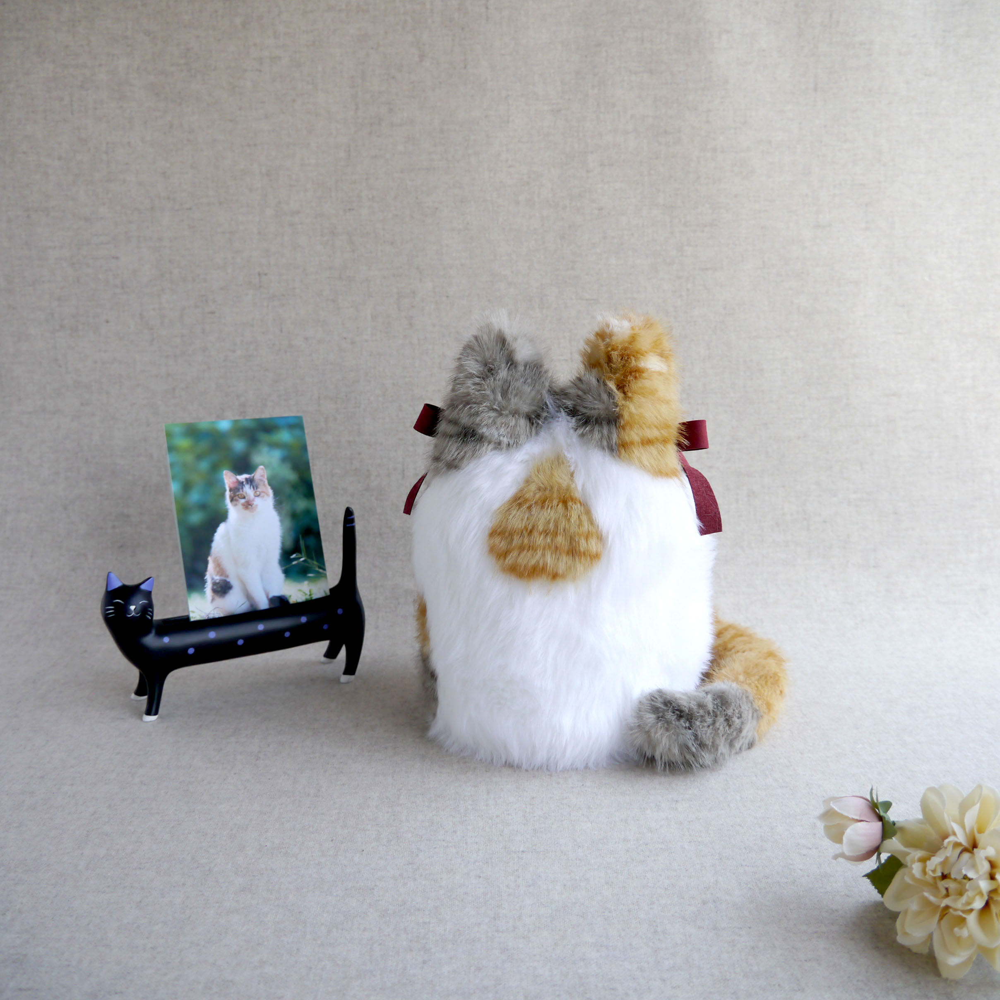
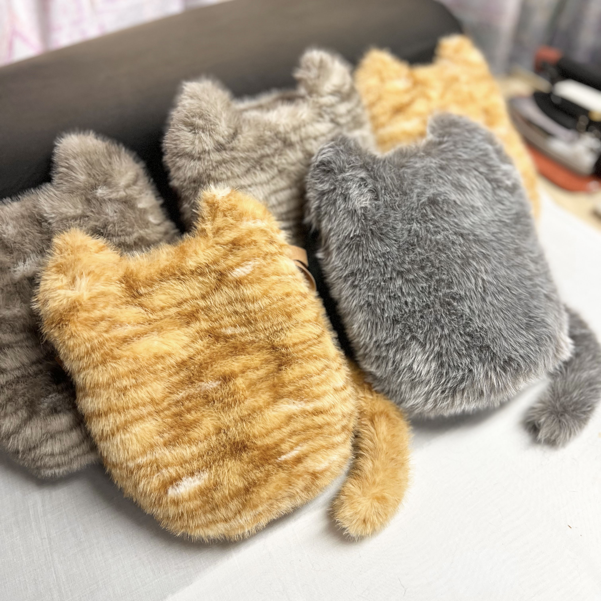
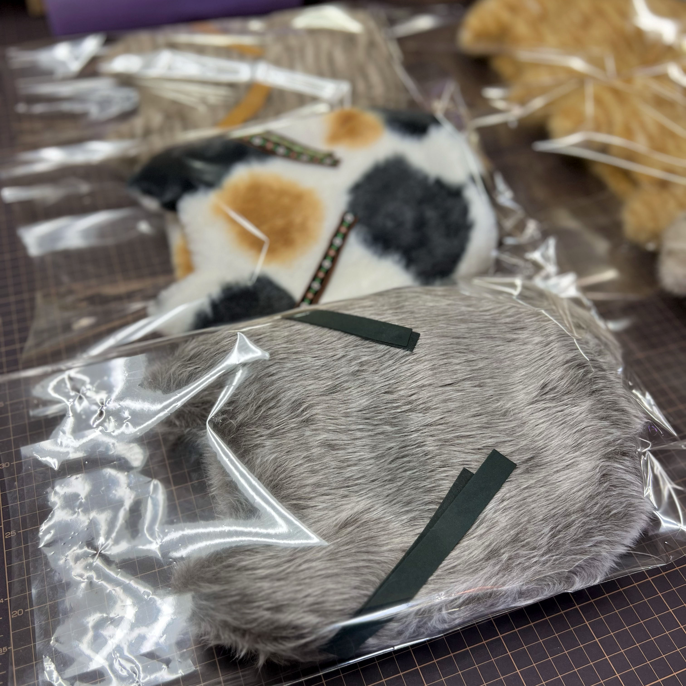

長野県飯田市で、30年ニット製品の縫製を手がけてきた竹村縫製です。
積み重ねてきた手仕事の技術を、いま新しい製品に活かしています。
Business
長野県の1995年設立の小規模縫製会社です。
ニットの洋服を中心に、縫製・リンキング加工を手がけてきました。
異素材を組み合わせたハイブランド品など独創的な洋服の縫製を任せていただくことも多く、
これまで培ってきた経験と技術で向き合っています。
Achievements
これまで大手アパレル商社との取引実績があり、 ハイブランドのニット製品を数多く製作してまいりました。 長年培ってきた縫製技術は、こうした高い品質基準の中で磨かれてきたものです。
※守秘義務の関係上、取引先名・ブランド名の記載は差し控えております。
ニットやハイブランド品づくりの中で、様々な素材と向き合ってきた経験を活かし、 フェイクファーを使ったペット用骨壷カバーを一つひとつ心を込めて仕立てています。 ありがたいことに、想像していた以上に多くの方に喜んでいただいています。 オーダー以外にも、お喜びいただける展開を検討中です。
ニットやハイブランド品など、様々な素材を扱ってきた経験から、フェイクファーの質感を活かした仕立てをしています。
アイデアを形にするため、型紙作りから何度も試作を重ねて完成させました。
心をこめて作った骨壷カバーを、想像以上に多くの方に喜んでいただいています。






Company Profile
会社情報
連絡先
ペット用骨壷カバーは販売店様を募集しております。 お気軽にお電話またはメールにてお問い合わせください。